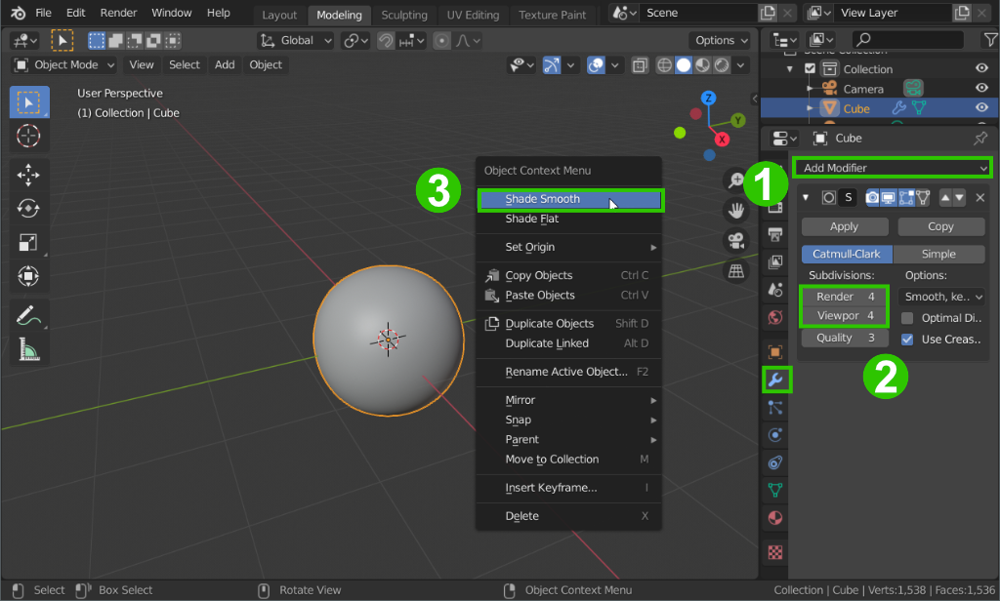
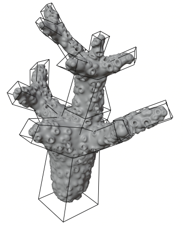

Übung 3.1 - Subdivision Surface Modeling
Box Modeling
Im folgenden Kapitel behandeln wir eine Modelliertechnik, die Subdivision Surface Modeling genannt wird. Es handelt sich hierbei grundsätzlich um Box-Modeling, da wir durch Extrudieren einer Box einen “Käfig” (=Control Cage) modellieren und damit ein Subdivision Surface kontrollieren (siehe Subdivision Surface Modifier).
Im Verlauf der Übung werden wir für unsere Unterwasserszene ein paar Korallen und einen Fisch modellieren.

1. Modifier
1.1 Subdivision Surface

- Öffnet eine neue Blender-Szene
- Fügt dem Würfel im Modifier Tab der Properties Editors einen Subdivision Surface Modifier hinzu
1
und stellt die Subdivisions vorerst auf 4 (2
) .
Subdivisions sind aufgeteilt in Viewport und Render Subdivisions. Viewport-Subdivisions für die Ansicht beim Bearbeiten der Modelle, *Render-Subdivisions für die Anzahl an Subdivisions beim Rendern (erzeugen des finalen Bildes).
- Stellt im Rechtsklickmenü
3
das Shading auf Smooth.
1.2 Displacement
Um kleinere Details wie z.b. Polypen an den Korallen zu erzeugen verwenden wir hier einen Displacement Modifier. Dieser verformt die Geometrie abhängig von dem Helligkeitswert einer Textur.

- Fügt der Koralle einen Displacement Modifier hinzu.
- Aktiviert in dessen Titelleiste das Edit Mode Symbol, damit dieser auch während dem Verändern des Meshes angezeigt wird.
Modifier werden von oben nach unten in der Liste angewand. Dementsprechend kann der Displacement Modifier die vom Sudivision Modifier erzeugte zusätzliche Geometrie verwenden
Der Displacement Modifier wendet eine Textur (kann z.b. auch eine Bilddatei sein) auf ein Mesh an, indem er die Oberfläche abhängig von der Helligkeit der Textur absenkt (Helligkeit < 0.5) oder erhöht (Helligkeit > 0.5)
- Klickt im Displacement-Modifier unter Texture auf New und klickt dann auf das Symbol ganz rechts daneben (siehe Screenshot), um direkt zum Texture-Tab des Properties Editors zu wechseln.

- Wählt im Texture-Tab nach einem Klick auf New nun als Typ Voronoi aus
- Stellt die “Polypengröße” → Size ein (hier 0.4)
- Gebt der Textur einen Farbverlauf. Dieser färbt die Textur neu ein. Dbei werden dunkle Areale den Farben im linken - helle Areale den Farben im rechten Bereich des Spektrums zugeordnet.
- Mit dem + Symbol lassen sich deue Farben hinzufügen. In diesem Beispiel funktioniert der Verlaufstyp B-Spline am besten.
- Da wir in diesem Beispiel keine Vertiefungen haben wollen, ist unsere dunkelste Farbe des Verlaufs hier mittelgrau (R=G=B=0.5), was für den Displacementmodifier der neutrale Wert ist.
- Hier wurde in der Mitte der Polypen ein Loch erzeugt, indem ganz links ein dunklerer graubereich hinzugefügt wurde.
- Bei Bedarf und je nach Rechenleistung eures PCs, kann der Subdivision Surface Modifier noch etwas hochgestellt werden, um dem Displacement Modifier ein höher aufgelöstes Mesh zu geben. Wenn euer PC zu schwach ist für so viele Subdivisions, stellt diese für View herunter und lasst sie nur für Render auf einem höheren Wert.
2. Korallenform
2.2 Modeling-Tools
- Wechselt nun mit
Tabzum Editmode - Nutzt die Extrude
E, InsetIund Loop CutStrg + RTools, sowie die Transformationswerkzeuge, um eine Koralle mit mehreren Verästelungen zu formen.
Anwendung der verschiedenen Tools
2.2 Verzweigungen
Verzweigungen können verschärft werden, indem kurz davor ein Loop-Cut hinzugefügt wird oder indem der Mean Crease - Wert in der Sidebar (N) für die betroffenen Kanten erhöht wird. Dieser gibt an, wie stark die Geometrie zu den Kanten “hingezogen” wird.

- Am Ende sollte eure Koralle z.b. so aussehen.
3. Mehr Korallen
- Erstellt mit den gelernten Techniken zwei weitere Korallen. Experimentiert mit verschiedenen Texturarten für den Displacement-Modifier. Die Korallen müssen nicht unbedingt so unterschiedlich zur Ersten sein wie in diesem Beispiel.
- Zum Beispiel kann eine Wood Textur auf ein einfaches Objekt angewandt schon eine vorzeigbare Hirnkoralle ergeben.

Aufgabe
- Erstellt drei Korallen mithilfe der gezeigten Modifier. Die Abgabe besteht aus einem Screenshot oder Rendering und der .blend Datei.
Ressourcen & Tutorials zum Thema
| Art/Länge | Titel | Thema | Quelle |
|---|---|---|---|
| Subdivision Surfaces: Overview | Suftwareunspezifische theoretische Erklärung zu Subdivisions | YouTube - GuerillaCG | |
| Blender 2.8 Beginner Tutorial - Part 3: Organic Modeling | Modeling mit Subdivision | YouTube - CG Boost | |
| Modeling Introduction - Blender 2.80 Fundamentals | Modeling allgemein | YouTube - Blender (offizieller Kanal) | |
| Beginner Blender Tutorial Level 1 - Part 2: Modelling | Modeling allgemein | YouTube - Blenderguru | |
| Modifiers - Blender Reference Manual | Modifiers | Offizielle Blender Dokumentation |
Gelerntes
| Funktion | Kontext | Shortcut |
|---|---|---|
| Subdivision Surface | Box Modelling | |